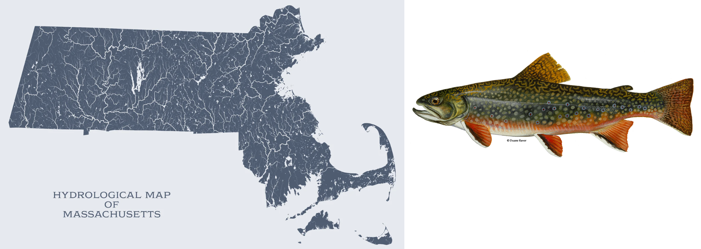

FW552
Applied Sampling
Class Stuff
Instructor: Brian Gerber
Classroom: Engineering E102
- Lecture/Discussion/Problem Solving
When: Mo/We 3 - 4:15pm
My Office: 202A Wagar, Cooperative Research Unit
Office hours: We 1pm - 2pm and by appointment
brian.gerber@colostate.edu
- Computers: Assignments will often require a computer (R programming)
My Background

What is this course?
Primarily:
- connecting things we care about (fish/wildlife/habitat) with sampling principles
What is this course?
Main Objective:
- to learn to think from a sampling perspective rather than a field logistics or field techniques perspective.
What is this course?
A mix of…
- Sampling principles
- Design-based inference
- Math / notation
- R coding
What is this course?
Some Important Concepts and Terminology
Inference
Sampling distribution
Sampling variation
Sampling Bias
Sample size
Estimator bias and variance
Questions for you…
Name / Department
What does ‘Sampling’ mean to you?
Motivation for taking this course?
Experience with the R programming language
One vision of an ideal job, research project, study animal, or study location.
Assessment
| Assessment Components | Percentage of Grade |
|---|---|
| Course Engagement | 10% |
| Assignments | 25% |
| Quizzes | 25% |
| Tests | 20% |
| Presentation | 20% |
Project
An oral presentation on a topic of choice that focuses on the ideas of sampling
- how to improve a current project
- designing a future study
- evaluating evaluating sampling options in terms of bias/precision/cost/etc.
Course Learning Objectives
Identify different types of sampling designs and understand when to apply them
Understand statistical estimators and their properties
Frame a fish and wildlife sampling design problem and apply appropriate statistical tools to estimate parameters of interest in accordance with the selected design.
Be able to use fundamental code practices in the R programming language.
Why is this class useful?
Fundamental to scientific learning
Thinking from a sampling perspective is a super power!
Have options in being efficient in your study’s
Interpret and frame learning when reading the literature
Software

Why learn to code?
- efficiency
- transparency
- flexibility in application
- shareable
- marketable skill
- needed for publications
Why use R?
- open-source and free
- small total user base / large in ecology and statistics
- find help online, e.g., stackoverflow
- data management
- statistics
- plotting / graphics
Why use RStudio?
- Makes using R easier
- Projects (file mgmt)
- R Shiny: Interactive online apps
- R Markdown: Interactive documents
- Quarto: interactive articles, websites, blog, …
- Posit - Certified B corp
Statistics in the Modern Age
- Cox and Efron, Sci. Adv. 2017;3: e1700768.
Teaching Philosophy
Learning is a choice (in every moment)
An inclusive environment is paramount for learning
Communication is everything
Everyone has something to teach and something to learn
Struggle is good. Solving problems leads to learning. But….
Words Matter
Website
Most Material
https://bgerber123.github.io/FW552/
Quizzes and Assignments
Questions

A ‘Sample’
Brook trout habitat in rivers of Massachusetts
A finite part of a target population whose properties are studied to gain information about the whole (i.e., to infer or gain inference).
A ‘Sample’
Brook trout habitat in rivers of Massachusetts
A selection of rivers (sample) to measure habitat characteristics (e.g. gravel beds) to be used to infer about habitat in all of the state.
Not Sampling
Piping plovers nesting at Watch Hill, RI
Census: a complete enumeration of a target population
Sampling
The process of selecting a representative part of the population for the purpose of determining characteristics of the target population.
Why do we need to sample?
- logistically/physically prohibitive
- fiscally prohibitive / waste of time and money
- timeliness
- sampling may be destructive
Central paradox of sampling
Impossible to know whether a sample is ‘good’ (i.e., representative of the target)
The sample itself cannot tell us - only the process
Given exact same sample, we treat it differently depending on how it was selected.
A sample from a reliable process has credentials